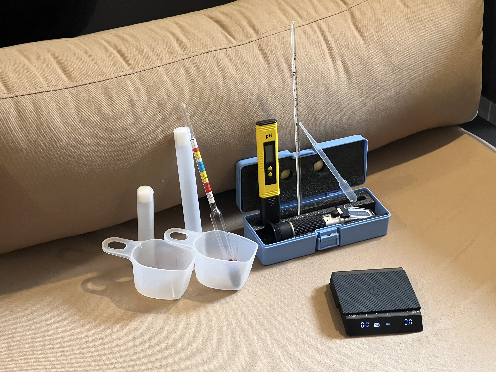
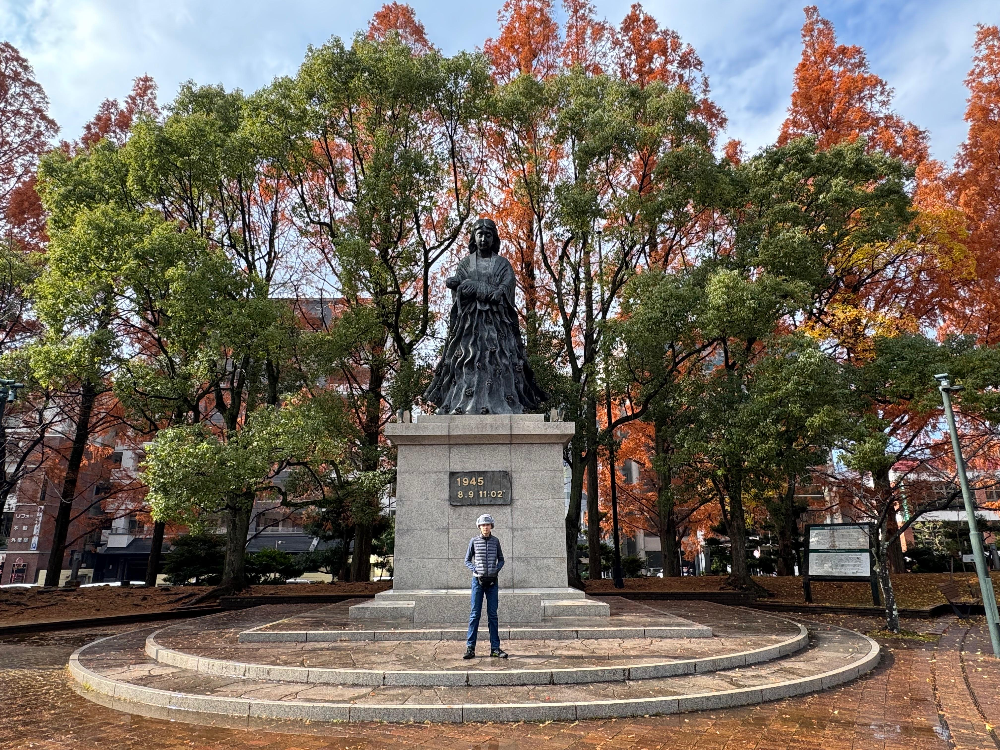

This project explores the science of fermentation through a controlled brewing experiment. By combining basic brewing ingredients with selected yeast strains, the study demonstrates how microorganisms transform sugars into alcohol and carbon dioxide. The objective of this research is to observe how different yeast types influence the brewing process, including fermentation activity, aroma development, and visual clarity.
Learn More
Biotechnology begins with fermentation.
Yeast cells metabolize sugars and convert them into alcohol, carbon dioxide, and secondary flavor compounds.
This project applies controlled brewing conditions to observe that transformation.
Temperature, pH, and ingredient ratios are measured to maintain a stable fermentation environment.
Using simple laboratory tools, the experiment tracks how microbial activity changes the liquid over time.
From raw ingredients to fermented product.
Biology at work.
Science made visible.
Finance for 1.99%.
Crafted through controlled fermentation using selected yeast strains. Observe how biological processes transform simple ingredients into a refined product.
Lease equipment for $499/month.
Measure. Compare. Improve.
Data-driven brewing to understand how biology shapes the final result.
Rewarding researchers like you.
Explore offers at My Biotechnik App.

Questions about the biotechnology brewing experiment or the research process are always welcome. This project documents the application of fermentation science, data collection, and observation of yeast activity under controlled conditions.
If you would like further information about the methodology, experimental setup, or research findings, please feel free to get in touch. Communication is open for discussion, feedback, or academic collaboration related to this study.
Email inquiries and direct messages are monitored regularly, and responses are provided as soon as possible.
Phone: +62 811-2346-698